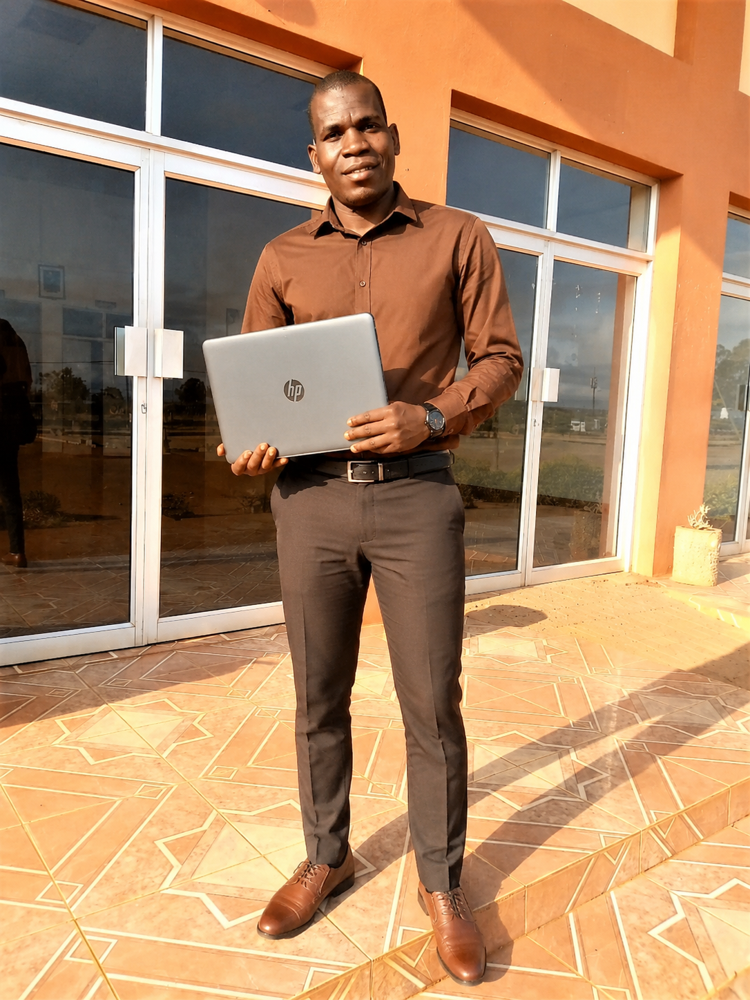
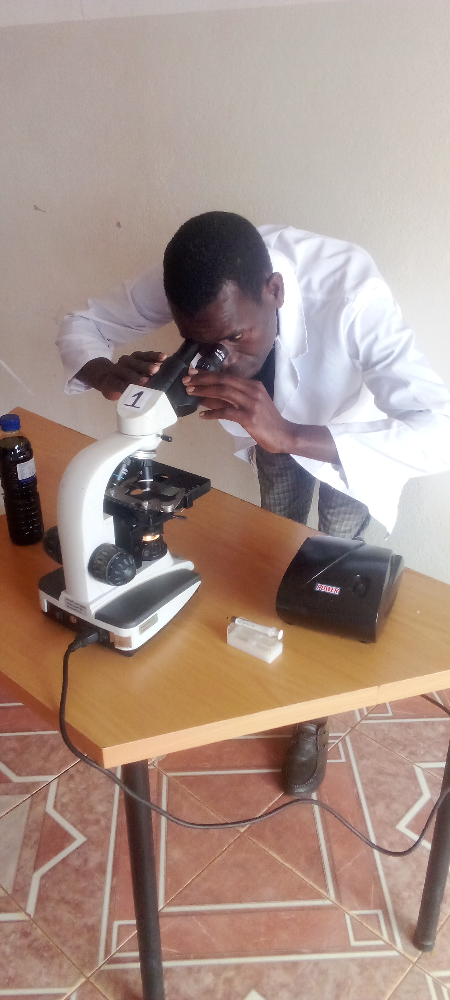
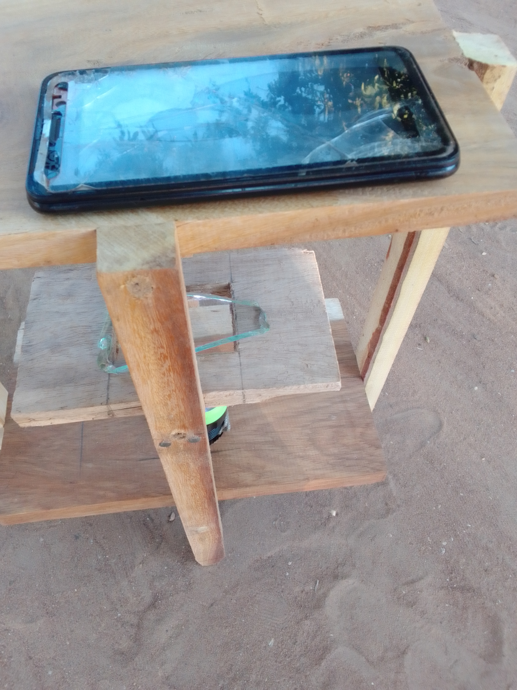

Ciência que transforma.
Tecnologia que resolve.
A MOZLAB KITS desenvolve soluções científicas, tecnológicas e inovadoras para responder aos desafios das comunidades em Moçambique.

Quem somos?
Ciência aplicada para transformar desafios em oportunidades.
A MOZLAB KITS – Ciência, Tecnologia e Inovação é uma iniciativa moçambicana dedicada ao desenvolvimento e aplicação de soluções científicas e tecnológicas acessíveis, com foco no desenvolvimento sustentável das comunidades.
Áreas de atuação
Onde ciência, tecnologia e inovação encontram problemas reais.
Ciência & STEM
Educação científica, experiências práticas, Biologia, Química e desenvolvimento de competências STEM.
Tecnologia
Aplicação de tecnologias acessíveis para resolver desafios locais.
Inovação
Transformação de ideias e problemas reais em soluções práticas.
Água & Saneamento
Soluções para água segura, monitorização, tratamento e resiliência comunitária.
Agricultura Sustentável
Ciência e tecnologia para fortalecer a produtividade e a resiliência agrícola.
Ambiente
Educação ambiental, sustentabilidade e proteção dos recursos naturais.
Projetos em destaque
Soluções desenvolvidas para desafios concretos.
MOZLAB KITS
Kits laboratoriais de baixo custo para apoiar o ensino prático de Ciências, Biologia e Química.
SOILWATER
Soluções de inteligência da água e do solo para fortalecer a resiliência agrícola.
Safe Water at Home
Soluções comunitárias para promover o acesso e uso de água segura.
Menstruação Sem Barreiras
Educação e iniciativas para reduzir barreiras relacionadas à educação menstrual.
Fundador
Conheça o fundador da MOZLAB KITS.

Tavares Alberto Namalope
Fundador da MOZLAB KITS – Ciência, Tecnologia e Inovação
Fundador da MOZLAB KITS, dedicado ao desenvolvimento de soluções baseadas em ciência, tecnologia, educação e inovação para responder aos desafios das comunidades em Moçambique.
A sua atuação está ligada à educação científica, inovação, sustentabilidade, água, agricultura e desenvolvimento de soluções acessíveis para comunidades.
Produção Científica
Investigação científica desenvolvida por Tavares Alberto Namalope, com foco em educação, ciência aplicada e desafios das comunidades em Moçambique.
Teacher Workload and Teaching Quality in Rural Primary Schools in Mozambique: A Qualitative Study in Lichinga District
Autor: Tavares Alberto Namalope
Afiliação: Universidade Rovuma, Instituto Superior de Desenvolvimento Rural e Biociências
Iniciativa científica: MOZLAB KITS – Ciência, Tecnologia e Inovação
Ano de publicação: 2026
Tipo: Publicação científica
Estudo qualitativo sobre a relação entre a carga de trabalho dos professores e a qualidade do ensino em escolas primárias rurais do distrito de Lichinga, província de Niassa, Moçambique.
Palavras-chave: Teacher workload; Teaching quality; Rural primary schools; Mozambique; Lichinga District; Niassa Province; Rural education; Qualitative research.
Publicado em: Zenodo
Fotos da MOZLAB KITS
Registos de experiências científicas e soluções tecnológicas desenvolvidas pela MOZLAB KITS.

Experiências no laboratório
Atividades práticas de experimentação científica desenvolvidas no âmbito da educação em Biologia, Química e STEM.

Microscópio caseiro
Desenvolvimento de uma solução de baixo custo para facilitar o acesso a experiências de microscopia e aprendizagem científica.
Voluntariado
Faça parte da transformação através da ciência, tecnologia e inovação.
A MOZLAB KITS acredita que o conhecimento, a ciência e a colaboração podem contribuir para transformar desafios locais em soluções sustentáveis.
O programa de voluntariado oferece oportunidades para pessoas interessadas em contribuir para projetos de educação científica, inovação, água, agricultura sustentável, ambiente e desenvolvimento comunitário.
Educação Científica
Apoio em atividades práticas de Biologia, Química, STEM e divulgação científica.
Água & Saneamento
Participação em iniciativas relacionadas com água segura, saneamento e sustentabilidade.
Agricultura Sustentável
Contribuição para soluções que promovam resiliência e sustentabilidade agrícola.
Ambiente
Apoio em ações de educação ambiental, conservação e proteção dos recursos naturais.
Tecnologia & Inovação
Desenvolvimento e aplicação de tecnologias acessíveis para responder a desafios locais.
Comunicação
Apoio na divulgação de projetos, atividades e resultados científicos da MOZLAB KITS.
Entre em contacto
Vamos transformar ideias em soluções.
📍 Metarica, Niassa, Moçambique
📞 +258 86 739 1952
💬 WhatsApp: +258 86 739 1952
📧 tavaresnamalope@gmail.com